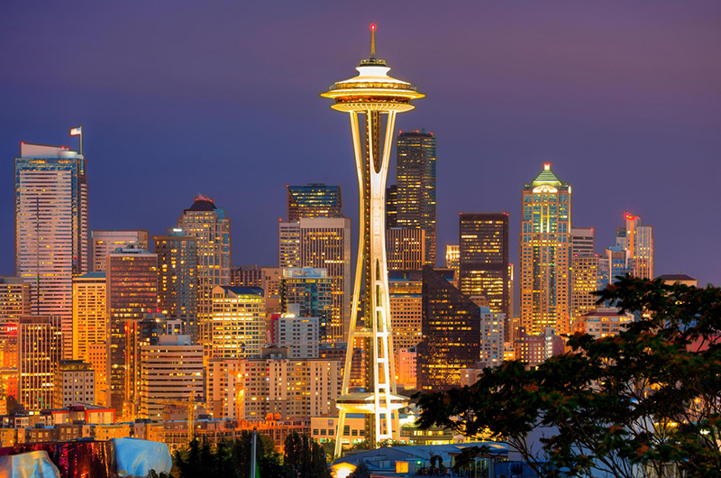

SEATTLE
SEATTLESeattle to największe miasto w stanie Waszyngton w Stanach zjednoczonych, jest ważnym morskim i lotniczym portem towarowym i osobowym w handlu z państwami azjatyckimi. Bardzo wielu ludzi nie zdaje sobie sprawy z istnienia tego miejsca, a na tej stronie przedstawię dlaczego warto się nim zainteresować.
Seattle posiada bardzo bogatą kulturę. W latach 90 powstało tutaj wiele znanych zespołów rockowych. Nakręcono też tutaj dużo filmów.